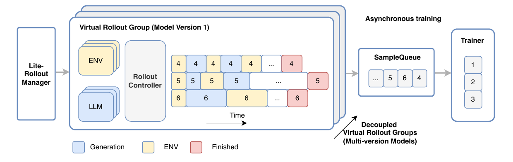
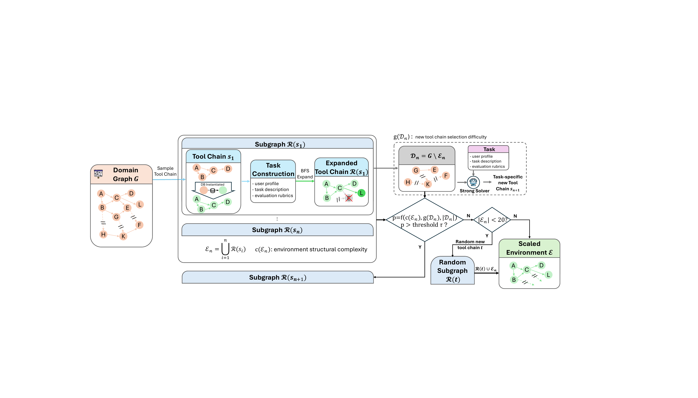
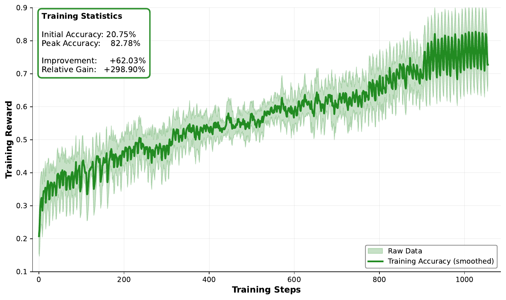
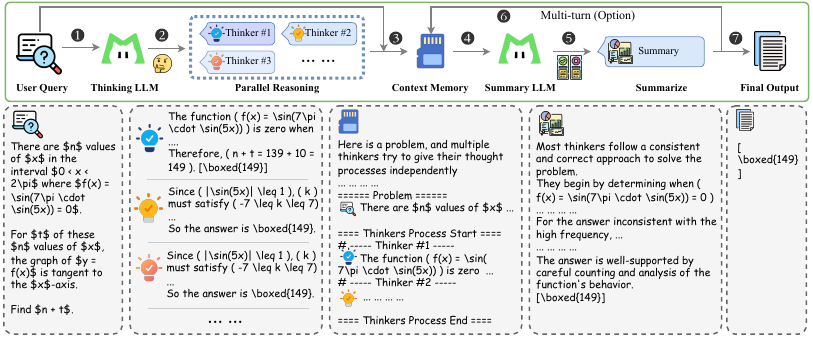

1
动机：从"会不会 think"到"能不能 agent"
2509 版本解决了"让 base model 学会 thinking"，主战场是数学 + tool-augmented。但跑下来发现三个真实世界的 gap：(1) agentic 任务没现成环境——传统 reasoning 是 environment-free 的纯语言推演，但 agentic search / tool use 需要主动决定"何时、如何与环境交互"；(2) 训练出来的 agent 不鲁棒——干净 benchmark 88 分部署到真实用户场景（用户表达模糊、工具偶发失败）就掉到 60 分以下；(3) single-pass thinking 撞天花板——intrinsic reasoning 接近极限时单条 CoT 加长收益递减，必须 test time 同时扩 depth + width。

图：RL framework 总览 — env scaling + robust RL + heavy mode 三件套src/assets/rl_framework.png '">
图 1：RL Framework 总览（环境扩展 + Robust RL + Heavy Mode 三件套）
核心 framing：intrinsic reasoning → environment interaction
论文把 agentic reasoning 定义为"通过与外部环境的自适应交互解决复杂问题"——明确把突破方向从"thinking trace 加长"切换到"环境交互"。这是 2026 年 agentic 转向的核心 framing。
三件基础设施（真正的贡献）
模型本身（560B / 27B activated）和 2509 没变；benchmark 提升来自 Environment Scaling + Robust RL with noise + Heavy Thinking Mode 三件配套——印证 base scale 到一定体量后，agent 能力边际收益主要来自环境多样性 × RL 稳定性 × 推理并行。
G1：环境图自动化扩张
Domain spec → 60+ tool 自动合成 → BFS 依赖检查 → executable tool chain → fallback 保证 ≥20 tool。成功扩张到 20+ domain、1万+ 环境。
G2：Robust RL 噪声注入
把 instruction noise + tool noise 显式拆解，curriculum 渐进注入——加 noise 训在干净 benchmark 几乎不掉点（甚至略升），但在 noisy benchmark 上 +5~7 分。
G3：Heavy Thinking Mode
parallel reasoning（扩 width）+ summary model reflection（扩 depth）+ context memory module + 额外 RL stage 训 summary 阶段。AIME-25 heavy 直接打满 100。
2
Environment Scaling + Robust RL
Environment Scaling 是这套 pipeline 最核心的工程突破——把"工具图"做成自动化扩张 + 可验证的闭环。"加新 tool 就行"听起来简单，但 uncontrolled 加 tool 会让 cross-tool database 失一致，正确 trajectory 也会被判失败 → 注入负 reward 是 biased 的，比没 reward 还糟。BFS 依赖检查 + 至少 20 tool fallback是 pipeline 能 scale 到 32K 环境的关键。

图：Environment Scaling Pipeline — Domain → tool graph → BFS chain → expansionsrc/assets/env_scaling.png '">
图 2：Environment Scaling Pipeline（domain → tool graph → BFS 扩张）
Domain → Tool Graph → Executable Chain
给定 domain（如 airline / retail / telecom），LLM 合成 60+ tool + schema + 实现，unit test + debugging agent 验证成功率 >95%。建 tool dependency graph，BFS 扩张采 executable chain $s_1$，决定是否加 $s_2$ 由 $p = f(c, g, |\mathcal{D}_n|)$ 控制。
三路 hybrid data synthesis（mid-training）
text-driven（教程挖 workflow）/ environment-grounded（Python 环境反向合成）/ planning-oriented（decomposition + decision-step 多候选）。32K→128K→256K 分级，500B + 40B tokens。pass@k 在 τ²-Bench 上"Enhanced"在大 k 显著高于 baseline。

图：agentic training reward — noise 注入后的训练曲线src/assets/agentic_training_reward.png '">
图 3：Agentic Training Reward（Robust RL noise 训练曲线）
3
Heavy Mode + 1M Context + 实验结果
Heavy Thinking Mode 同时扩 depth × width：thinking model 并行生成 N 条 candidate trajectory（扩 width）→ summary model 反思并 aggregate（扩 depth）。关键设计："生成多个候选"和"在多个候选间反思选择"是两个可分离的能力——单独为 summary 阶段做 RL。AIME-25 heavy 直接打满 100，BrowseComp-ZH 77.7 开源第一。

图：Heavy Mode — parallel reasoning → summary → aggregatesrc/assets/heavy_mode.png '">
图 4：Heavy Mode（parallel reasoning + summary model aggregate）
① Env Scaling 并行
Domain → tool graph → BFS dependency-checked expansion。20+ domain、1万+ 环境、3.2万并发，可验证的 verifiability-preserving expansion 是 scale 的关键。
② Robust w/ Noise
instruction noise + tool noise 显式拆解，curriculum 注入。干净 benchmark 几乎不掉点，noisy benchmark +5~7 分（VitaBench-Noise +7.2、τ²-Noise +4.9）。
③ Heavy Mode 更深
parallel reasoning 扩 width + summary model reflection 扩 depth + 单独 RL stage。AIME-25 直接 100，BrowseComp-ZH 77.7 开源第一。
④ ZigZag 加速 1M
mid-training 阶段 50% 层换 SSA（Sliding Sparse Attention），1.5× 推理加速，性能保持，支持 1M tokens context。